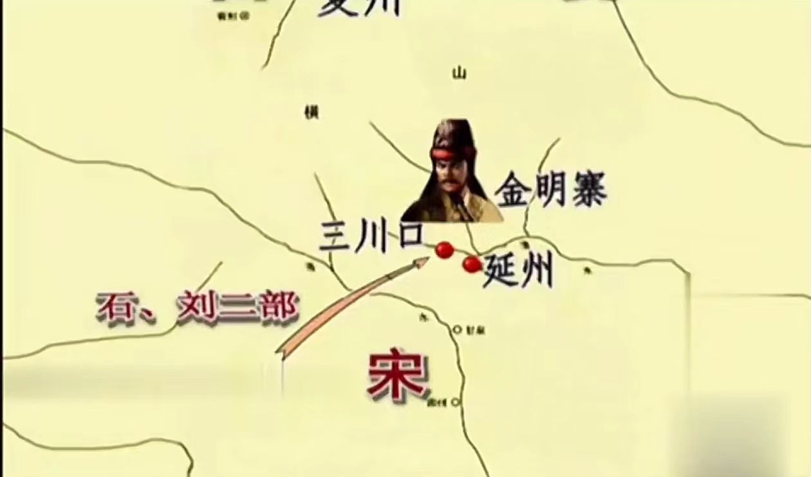

潞州之战，是五代十国时期后唐与后梁之间的一场关键战役。此战发生于公元911年（后梁乾化元年，后唐天成二年），地点位于今天的山西长治一带。潞州之战不仅是一场军事较量，更是后唐和后梁两国政治、经济、军事力量的全面对决。
战役背景方面，后唐庄宗李存勖在击败后梁军队、取得魏博之地后，势力迅速扩张，对后梁形成巨大威胁。后梁皇帝朱温为了遏制后唐的扩张势头，决定发动对潞州的进攻，以图夺回失地。
在战役过程中，后梁军队在数量上占据优势，但后唐军队在李存勖的英明指挥下，采取了巧妙的战术布局。李存勖利用地形优势，设伏兵于险要之处，以逸待劳。当后梁军队进攻时，后唐伏兵突起，给予后梁军队致命打击。经过激战，后梁军队大败，损失惨重。
潞州之战的结果对后唐和后梁两国产生了深远影响。此战使后唐进一步巩固了在北方的地位，为后来的统一战争奠定了坚实基础。而后梁则因此战失利，国力大损，逐渐走向衰落。
此外，潞州之战还展示了李存勖的军事才能和战略眼光。他能够充分利用地形和兵力优势，采取灵活的战术手段，最终取得胜利。这也为后来的军事家们提供了宝贵的经验和启示。
总之，潞州之战是五代十国时期一场重要的战役。它不仅改变了后唐和后梁两国的命运，也展示了李存勖的军事才能和战略眼光。这场战役对于研究五代十国时期的政治、经济、军事等方面都具有重要意义。

延州之战，发生在五代十国时期，是后晋与后汉之间的一场关键战役。这场战役发生于公元947年（后晋开运四年，后汉乾祐四年），地点位于今天的陕西延安一带。延州之战不仅是军事上的较量，更是两国政治、经济、军事力量的全面对决。
战役背景方面，后晋石敬瑭为求契丹援助，割让燕云十六州，使契丹得以窥视中原。后晋出帝石重贵继位后，意图收复失地，与契丹关系紧张。后汉高祖刘知远在此时趁机崛起，意图统一中原。为了控制关中地区，后汉发兵进攻后晋控制的延州。
在战役过程中，后汉军队在数量上占据优势，但后晋军队在延州守将的英明指挥下，采取了积极的防御策略。他们利用延州地形险要，构筑了坚固的防御工事，同时积极调配兵力，准备迎战。当后汉军队发起进攻时，后晋军队凭借坚固的防御工事和充足的兵力，给予后汉军队沉重的打击。经过多日激战，后汉军队未能取得突破，最终被迫撤退。
延州之战的结果对后晋和后汉两国产生了深远影响。此战使后晋成功守住了关中地区，为后来的统一战争奠定了坚实基础。而后汉则因此战失利，国力受损，统一中原的梦想暂时破灭。
此外，延州之战还展示了后晋军队的顽强抵抗和出色的防御战术。他们充分利用地形优势，构筑坚固的防御工事，同时积极调配兵力，最终成功抵御了后汉军队的进攻。这也为后来的军事家们提供了宝贵的经验和启示。
总之，延州之战是五代十国时期一场重要的战役。它不仅改变了后晋和后汉两国的命运，也展示了后晋军队的顽强抵抗和出色的防御战术。这场战役对于研究五代十国时期的政治、经济、军事等方面都具有重要意义。